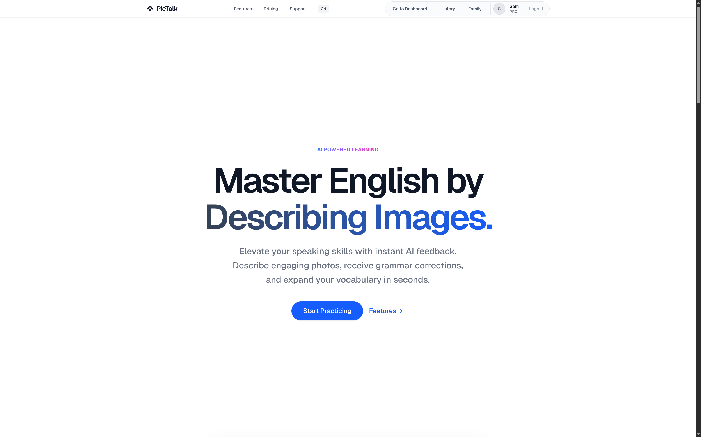
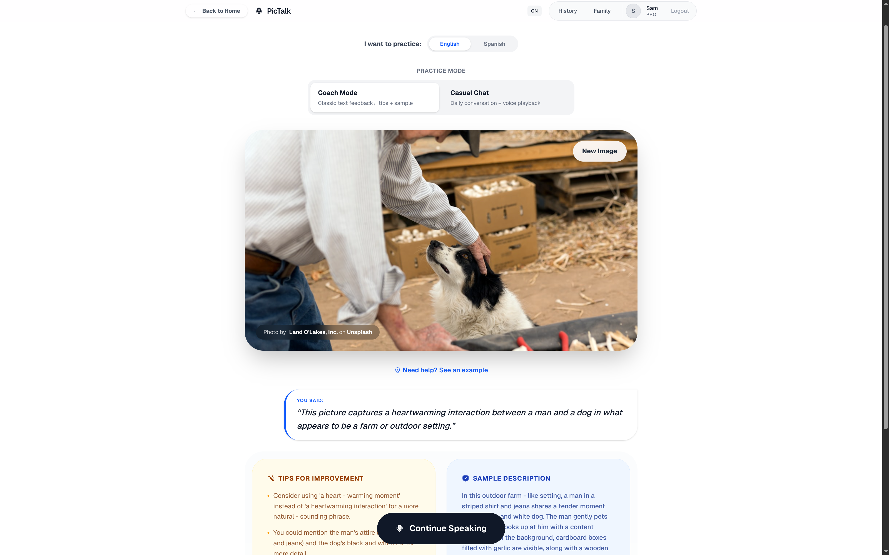
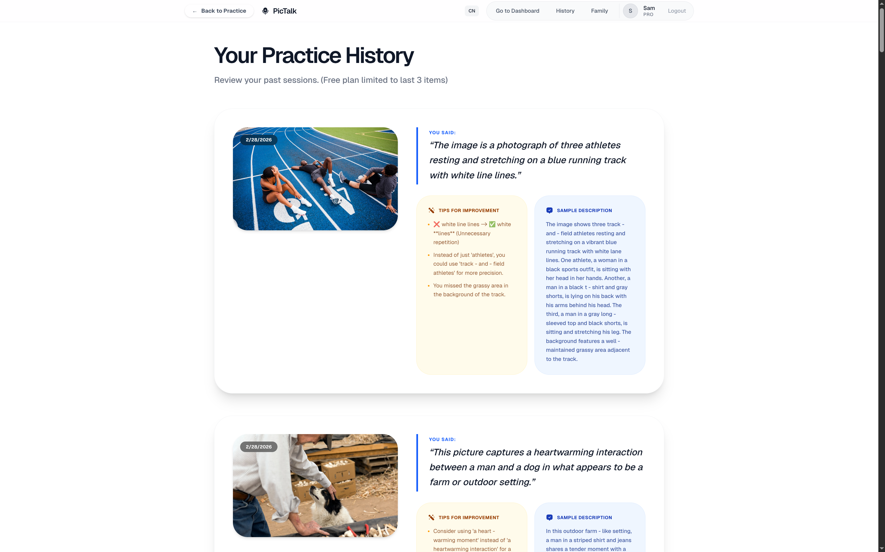
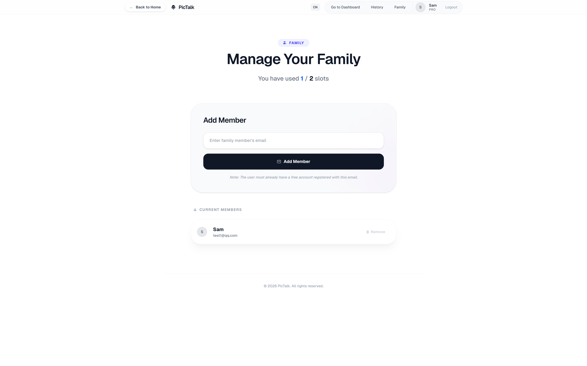

PicTalk is a full-stack web application designed to help users master English speaking by describing images. It uses artificial intelligence to give instant feedback on grammar and vocabulary.
I built this application using Next.js and Tailwind CSS for the frontend. For the backend and database, I used Firebase (Auth and Firestore). I also integrated Stripe for subscription payments.
Practice Mode: Users can choose between "Coach Mode" to describe random images from the Unsplash API, or "Casual Chat" for daily conversation. The app records user audio and processes it using the ElevenLabs STT (Speech-to-Text) API.
AI Feedback: I used the AI API to analyze the transcribed text. It provides grammar corrections, suggests better words, and generates a native-level sample description. The app can also read the feedback out loud using the ElevenLabs TTS (Text-to-Speech) API.
History Tracking: Users can view their past practice sessions. The history page shows the image they described, their voice transcription, and the AI feedback. Free users can see their last 3 records, while Pro users have access to more.
Family Plan Management: Users with a Family Plan subscription can invite up to 2 other members to share Pro features. The system securely links accounts in the database.


